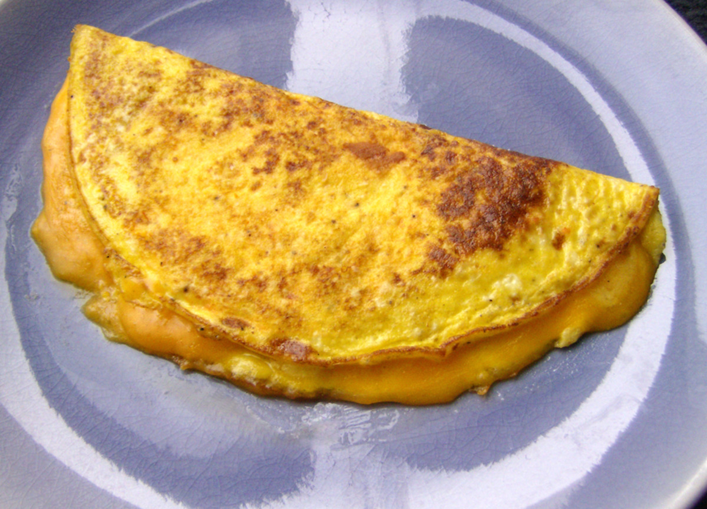

Cheese Omelette

Description
A classic breakfast dish beloved by all that is quick and easy to make!
Ingredients
- 2 large eggs
- 1 tbsp milk (optional, as needed)
- Salt and black pepper, to taste
- 1/2 tbsp oil
- 1-2 tbsp shredded cheese
Steps
- Crack eggs into a bowl. Season to taste with salt and black
pepper, and add milk if desired to make the texture creamier. Beat
eggs until fully combined.
- Put oil into a small non-stick pan/skillet. Put on medium-low heat.
- Once the pan is hot, pour the egg mixture. Evenly distribute the
mixture on the pan by swirling if necessary.
- Use a spatula to push cooked egg portions inward and tilt pan to
allow the uncooked portions to make contact with the pan. Repeat
until omelette becomes somewhat firm overall.
- Once the omelette is cooked on the bottom but still somewhat raw
on top, sprinkle the shredded cheese on top of one half of the
omelette.
- Use spatula to ease around the edges of the omelette. Take the
omelette half with no cheese and fold over the cheese covered
half.
- Once golden-brown, turn off heat and plate the omelette.
- Enjoy!